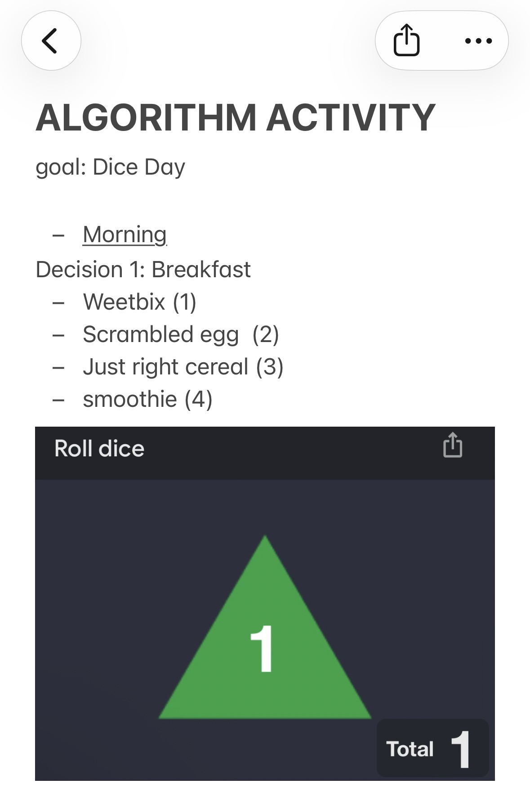
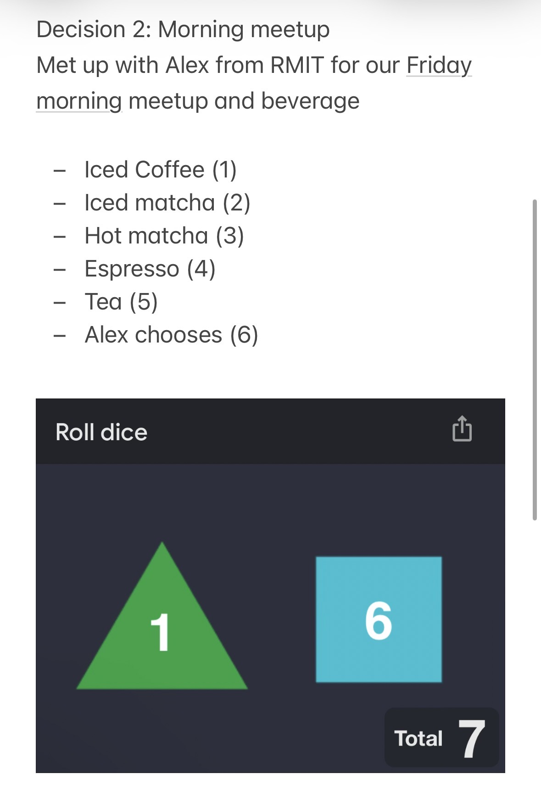
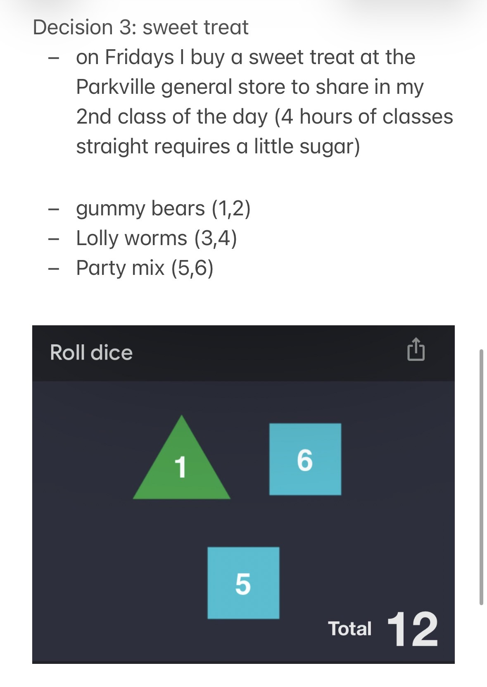
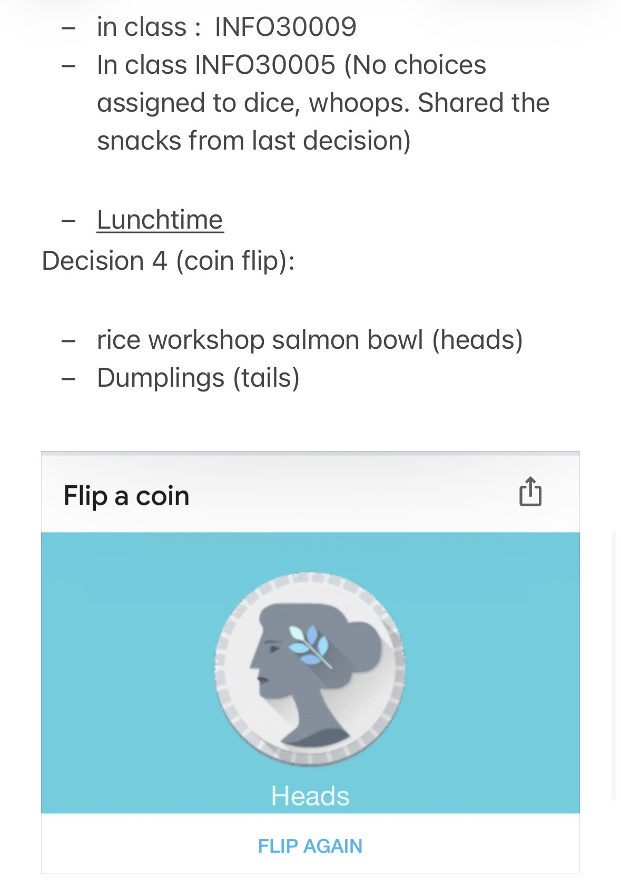
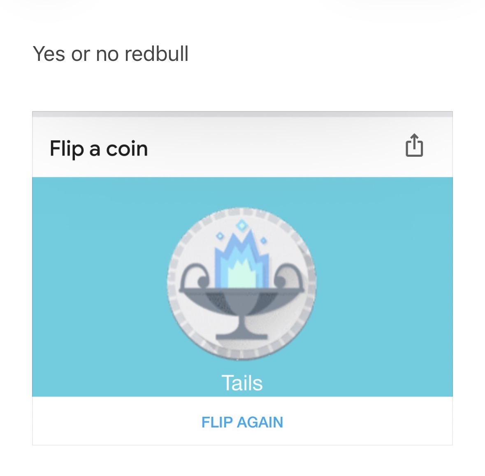

back
Inbetween week 6 and 7, I particpated in the 12-hour algorithm activity using google's dice and coin flip features, taking notes throughout the day. Participating in this task, although interesting, was mildly annoying. I found during this activity, Unconciously I ended up giving to the 'algorithm' were usually food related, as they were the lightest options to delegate. I think the reason why I found this activity strained is because it is breaking down many of the heuristics I use to make everyday decisions - making the whole process alot slower. It did make me realise, however, that there are quite alot of decisions I make in daily activities that I don't think about much. odd!

My friend ended up choosing a Hot Matcha for me, seeing that it was very cold. (Is his decision makings a separate algorithm? or an element of my the 'algorithm' I was following this day?)



End of activity (Tails was No). I got too tired and stopped thinking of possible things to decide with a dice roll. Ironic?
